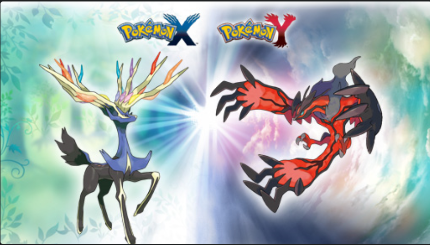

Jogos
XY

Muito aguardado na época de seu lançamento, este jogo de Pokémon trouxe um novo estilo com gráficos em 3D para
mostrar o poder do portátil Nintendo 3DS. Porém, a revolução das versões X & Y não foi apenas no visual. Um novo
tipo de monstrinhos de bolso foi introduzido na aventura: os fairy Pokémon.
A jornada para juntar insígnias e enfrentar os melhores treinadores se passa em Kalos, uma região baseada no país
da França. Por último, outra grande novidade foram as chamadas Mega-Evoluções, momentos especiais nos quais os
monstrinhos ficam ainda mais poderosos.
Data de lançamento: 12 de outubro de 2013
Plataformas: Nintendo 3DS, 2DS
Metacritic: 88
HeartGold & SoulSilver

O remake das versões Gold & Silver lançadas para o Game Boy Color trouxe melhorias em todos os quesitos. Os novos
modelos 3D que se mesclam com uma arte em pixels conseguiram agradar fãs de todos os tipos. O menu diretamente pela
tela de toque do Nintendo DS foi um ponto válido de qualidade de vida.
Toda a aventura na região de Johto garante horas de diversão, oferecendo monstrinhos peculiares e a dupla de
lendários Lugia e Ho-Oh. Outra novidade foi a adição de um periférico chamado Pokéwalker. Ele permite que o jogador
saia pelas ruas reais enquanto junta passos para itens e afeições a seus Pokémon.
Data de lançamento: 26 de março de 2010
Plataformas: Nintendo DS
Metacritic: 87
Black and White